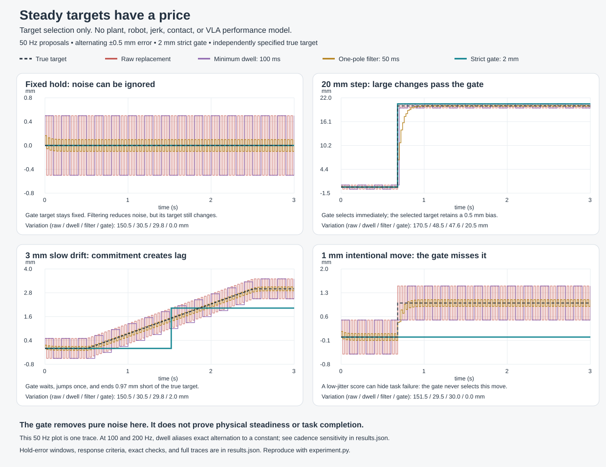

Controls research · 17 October 2026 · checked mathematics, open engineering
Steady enough to move
Keep the tool within a useful error bound. Let it respond when the task really changes.
Human steadiness gives us a useful design direction: coordinate fast corrections, use stiffness where the task needs it, and separate intended motion from disturbance. It does not give us one rule that makes every arm perfectly still.
New result. A Lean proof links a bounded-noise target gate to our existing physical holding model. No number of valid noisy proposals can move the held reference. The actual model stays inside its stated position tube. A separate result bounds the total change of accepted targets. These results do not establish zero vibration, a working VLA error bound, or publication novelty.
What the human experiments suggest
| Evidence | Design lesson | Limit |
|---|
| Voluntary stiffening increased finger tremor during a pointing task. Morrison & Newell, 2000 | Measure tool motion. Coordinated joint motion can help hold the tool still. | Abstract-supported, task-specific result. It does not show that stiffness is always harmful. |
| People learned task-dependent arm impedance in an unstable force field. Burdet et al., 2001 | Choose stiffness by direction and task. Account for damping and effort. | Controlled planar task; accessible abstract, figures and supplement. |
| Hand and shoulder muscles showed coordinated, goal-dependent responses around 60 ms after a disturbance. Crevecoeur et al., 2016 | Coordinate arm and grip in a fast feedback loop beneath the planner. | Sixteen participants; methods and results inspected. This does not identify a fixed human replan period. |
Mechanical resonance and shared neural input can both contribute to physiological tremor. Several sensors can report one shared disturbance. Their agreement is not automatically independent evidence. The evidence review separates these mechanisms and the studies of essential and Parkinsonian tremor.
The first contract: a reason to change target
Let p be the intended target, y a proposed target, and c the retained target. The proposal error must be bounded by ε at decision time. The gate replaces c with y only when their distance exceeds H.
|y − p| ≤ ε and change target only if |y − c| > H
Reject noise
If the intended target stays fixed, the initial anchor is ε-valid, and H ≥ 2ε, every noisy proposal leaves the reference unchanged.
Respond to a clear change
If |pnew − c| > H + ε, the next valid proposal passes. Relative to the old true target, a sufficient step is larger than H + 2ε.
State the cost
A rejected proposal can leave target error as large as H + ε. Smaller deliberate moves can be ignored. Passing this gate does not mean a safe motion exists.
For an accepted history, let V be true-target variation at the accepted indices, S accepted-target variation, and n the number of changes. If H > 2ε, Lean checks:
n ≤ V / (H − 2ε) and S ≤ H V / (H − 2ε)
Thus extra planner calls cannot create unbounded accepted-target motion when true-target variation is bounded. The theorem takes a finite history with valid anchors and accepted step distances as input. Extracting that history from all proposal indices is not yet formalized. Target variation is not executed tool-path length.
With ε = 0.5 mm and H = 2 mm, accepted-target variation is at most twice the true-target variation. A true step above 3 mm is guaranteed to pass at the next valid proposal. The gate can ignore a deliberate 1 mm move. These are illustrative settings, not measured robot parameters.

Target selection before trajectory or physical feasibility checks. The replay includes cases where the gate loses responsiveness. See metrics and cadence sensitivity and replay source.
The physical result we can now state
The new QuietHold theorem puts the gated reference directly inside the actual plant equations. It then proves that bounded noisy replanning preserves the held reference and the existing physical bound:
|x(t) − p| ≤ R + ε and |u(t) + w(t)| ≤ U
This is conditional on our scalar lag model: x′ = v, v′ = a, a′ = r(t)(u + w − a), with 8 ≤ r(t) ≤ 12 and feedback u = −8(x − c) − 6v − a/2. The initial transformed state must lie in its certified cube of radius R. The disturbance must obey |w| ≤ 2R, and authority must satisfy 26R ≤ U. The proof applies to an existing classical trajectory on any finite horizon.
The feedback command can change to oppose disturbance even though its reference stays fixed. The bound permits motion inside the tube. It does not prove rest, convergence, flexible-arm dynamics, contact stability, or a sampled implementation.
Scale matters. Our earlier stopping-and-capture example had R = 55.525 mm. That is a travel-safety example, not precision holding. A 1 mm radius would require a much tighter initial-state certificate and |w| ≤ 0.002 m/s² in this model. Sensor errors and feedback delay consume that budget. The target gate does not remove them.
How the pieces fit
Task evidence→Target gate→Smooth feasible motion→Fast physical feedback
Every accepted motion must retain a safe stop or hold. We have separate proofs for scalar smooth splices and stopping/holding. The new fixed-target composition checks one interface. A changing-target controller that preserves all these guarantees remains open.
A stale proposal needs a larger uncertainty bound. If model error is εmodel, target speed is at most L, and proposal age is Δ, a sufficient bound is εmodel + LΔ. A VLA confidence score does not establish that bound. A downstream safety rejection also invalidates any promise that the newly selected target was adopted.
Public explanation: target selection, its benefit, and its resolution cost. Render notes.
The next useful proof target
Prove a bound on physical tool error while the intended target and feedback settings change. Each update must account for the energy it adds. For a local mass–spring–damper error model with constant inertia and symmetric stiffness, changing stiffness K introduces the power term ½ eᵀK′e. Matching trajectory derivatives alone does not remove this term.
A candidate bound should include decay of old error, a residual term from disturbance, and the accumulated effect of admitted updates. It must also retain actuator and stopping limits. Energy-based variable impedance, reference governors, disturbance observers, and learned continuation are existing methods. Our controls comparison names the baselines. The contribution would need to be a useful checked composition with a measured advantage.
- Test planner noise, a periodic load, feedback delay, and a contact change separately. Identify which layer causes tool motion.
- Derive the physical disturbance and tracking bounds, including effort, sensing and delay. Check whether the radius is useful.
- Connect changing targets to smooth motion and retained stopping reserve. Then compare against the named baselines under the same limits.
Possible tasks include holding a camera view, maintaining a dispenser tip, or stabilizing a held tool during assembly. A flexible tool or a moving contact adds dynamics our present model does not cover.